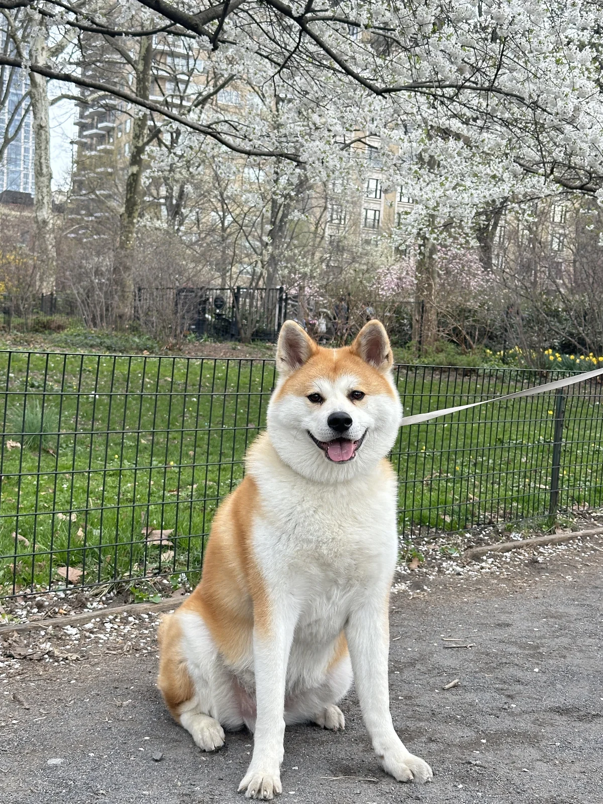

Match the rhythm to the moment.
Starting up plays once and settles into a seated pose. The other behaviors loop. I explored longer sequences, then returned working and attention to earlier versions to preserve their original rhythm.
Melo · Avatar & interaction design
Inspired by Melo, our Japanese Akita, I’m designing an avatar for a local AI agent. The character communicates what the agent is doing and brings a little companionship through something you’re familiar with.
 Working on it
Working on itDesigned
An animated avatar that makes agent activity recognizable, with quiet and playful moments when the agent is idle.
Choose a behavior to see how Melo communicates. Resting and playing both mean the agent is idle.
Carrying out your task.
The local-agent concept aimed for around-the-clock availability with less worry about token use, greater control over personal data, and long-term personalization. Inspired by products like Dot and Muse, I focused on adding familiarity through a character based on Melo.
I uploaded photos and videos of Melo’s real-life behavior into Codex, explored illustration styles, and chose a static character before developing its animations.


Earlier proportions felt too round. I refined the body and front legs while retaining the orange-and-cream markings, upright ears, and curled tail. Those features became the visual anchors to preserve across every action.


I used Codex and Claude Code for artwork and prototyping, directing the visual choices, consistency, and behavior.
Once the character was established, I mapped its behavior to five functional states. Each pose starts with a specific moment in the agent experience, so the animation has a job to do.


The design choice / Two ways to be idle
An assistant when you need one. A fun, joyful character in between. I created both resting and playing behaviors for idle time. Quiet breathing keeps Melo present; a toy adds a playful moment. Neither implies that a task is running—the difference is in the companionship.
Starting up plays once and settles into a seated pose. The other behaviors loop. I explored longer sequences, then returned working and attention to earlier versions to preserve their original rhythm.
A gentle paw tap signals a question or request for approval. The handoff calls for this cue to interrupt other behaviors, so an idle animation never delays a request for input.
The avatar and interactive preview are ready. Integration into the local agent is the next step.
Ready for handoff
Consistent alignment keeps Melo grounded when poses change. Still poses preserve the state cue when motion is turned off, and explicit labels keep the meaning clear.
I want to explore how this could become a product for more people: bring a pet, a favorite character, or another meaningful reference, and turn it into an avatar for a personal agent.
I would test whether people can distinguish thinking, working, and idle behavior, and notice a request for input without distraction. Then I would explore how the approach works with other characters.
I’m exploring UX research opportunities, and related roles in product insights, customer experience, and strategy.